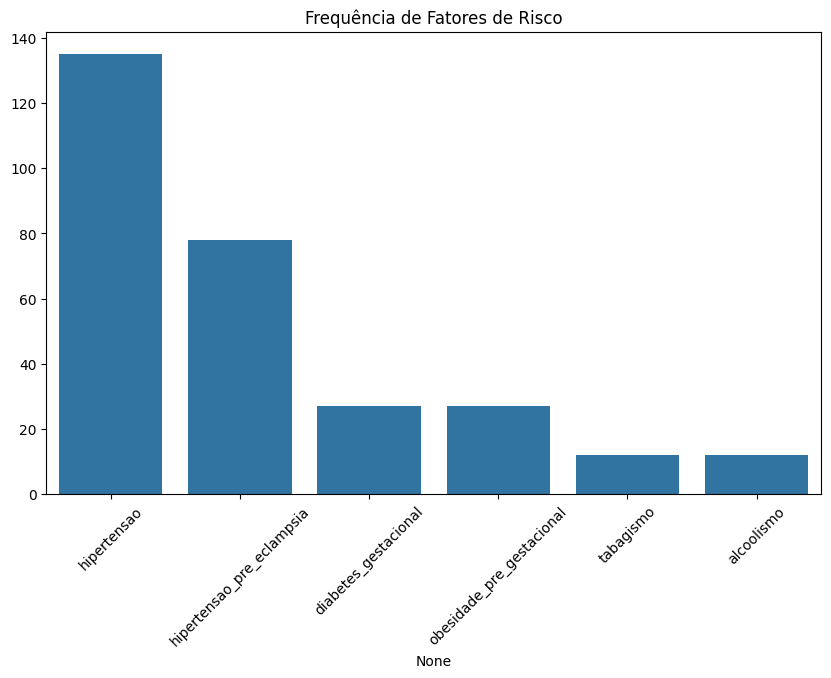

| consulta_numero | data_consulta | idade | idade_gestacional | pressao_sistolica | bpm_materno | saturacao | temperatura_corporal | altura | peso_fetal | diabetes_gestacional | hipertensao | hipertensao_pre_eclampsia | obesidade_pre_gestacional | historico_familiar_chd | tabagismo | alcoolismo | frequencia_cardiaca_fetal | circunferencia_cefalica_fetal_mm | circunferencia_abdominal_mm | comprimento_femur_mm | translucencia_nucal_mm | chd_confirmada | tipo_chd | peso | ano | imc | total_fatores_risco | num_chd_codigos | gestante_id | codigo_chd | |
|---|---|---|---|---|---|---|---|---|---|---|---|---|---|---|---|---|---|---|---|---|---|---|---|---|---|---|---|---|---|---|---|
| count | 135.000000 | 0.0 | 135.000000 | 135.000000 | 135.000000 | 135.000000 | 135.000000 | 135.000000 | 135.000000 | 135.000000 | 135.00000 | 135.0 | 135.000000 | 135.00000 | 135.000000 | 135.000000 | 135.000000 | 135.000000 | 135.000000 | 135.000000 | 135.000000 | 135.000000 | 135.0 | 0.0 | 135.000000 | 0.0 | 135.000000 | 135.000000 | 135.0 | 135.000000 | 0.0 |
| mean | 2.000000 | NaN | 29.377778 | 39.375556 | 142.555556 | 101.688889 | 91.400000 | 36.891111 | 1.660889 | 2579.666667 | 0.20000 | 1.0 | 0.577778 | 0.20000 | 0.177778 | 0.088889 | 0.088889 | 174.844444 | 328.053333 | 309.597778 | 70.206667 | 3.520000 | 1.0 | NaN | 68.726667 | NaN | 24.950755 | 2.333333 | 0.0 | 23.000000 | NaN |
| std | 0.819538 | NaN | 7.949342 | 4.827834 | 7.007104 | 7.023911 | 1.328224 | 0.362097 | 0.054642 | 941.383842 | 0.40149 | 0.0 | 0.495753 | 0.40149 | 0.383750 | 0.285643 | 0.285643 | 8.683375 | 11.904651 | 11.699875 | 2.731770 | 0.599851 | 0.0 | NaN | 11.471641 | NaN | 4.275410 | 0.992509 | 0.0 | 13.035543 | NaN |
| min | 1.000000 | NaN | 14.000000 | 24.000000 | 130.000000 | 90.000000 | 90.000000 | 36.300000 | 1.560000 | 710.000000 | 0.00000 | 1.0 | 0.000000 | 0.00000 | 0.000000 | 0.000000 | 0.000000 | 161.000000 | 310.000000 | 292.100000 | 65.300000 | 2.500000 | 1.0 | NaN | 37.200000 | NaN | 13.463719 | 1.000000 | 0.0 | 1.000000 | NaN |
| 25% | 1.000000 | NaN | 23.000000 | 36.850000 | 138.000000 | 96.000000 | 90.000000 | 36.600000 | 1.610000 | 1690.000000 | 0.00000 | 1.0 | 0.000000 | 0.00000 | 0.000000 | 0.000000 | 0.000000 | 169.000000 | 317.200000 | 298.200000 | 68.600000 | 3.000000 | 1.0 | NaN | 63.100000 | NaN | 22.753851 | 2.000000 | 0.0 | 12.000000 | NaN |
| 50% | 2.000000 | NaN | 28.000000 | 39.600000 | 141.000000 | 101.000000 | 91.000000 | 36.900000 | 1.670000 | 2730.000000 | 0.00000 | 1.0 | 1.000000 | 0.00000 | 0.000000 | 0.000000 | 0.000000 | 175.000000 | 330.700000 | 311.900000 | 70.600000 | 3.600000 | 1.0 | NaN | 67.500000 | NaN | 24.982699 | 2.000000 | 0.0 | 23.000000 | NaN |
| 75% | 3.000000 | NaN | 33.000000 | 42.700000 | 147.000000 | 107.000000 | 92.000000 | 37.200000 | 1.710000 | 3390.000000 | 0.00000 | 1.0 | 1.000000 | 0.00000 | 0.000000 | 0.000000 | 0.000000 | 182.000000 | 336.600000 | 319.500000 | 72.100000 | 4.100000 | 1.0 | NaN | 75.000000 | NaN | 27.548209 | 3.000000 | 0.0 | 34.000000 | NaN |
| max | 3.000000 | NaN | 50.000000 | 49.800000 | 154.000000 | 114.000000 | 94.000000 | 37.500000 | 1.740000 | 4140.000000 | 1.00000 | 1.0 | 1.000000 | 1.00000 | 1.000000 | 1.000000 | 1.000000 | 188.000000 | 348.000000 | 329.000000 | 74.900000 | 4.400000 | 1.0 | NaN | 89.200000 | NaN | 35.210703 | 4.000000 | 0.0 | 45.000000 | NaN |
| p_valor | |
|---|---|
| idade | 0.000563 |
| imc | 0.003186 |
| pressao_sistolica | 0.000122 |
| frequencia_cardiaca_fetal | 0.000003 |
| idade_gestacional | 0.010949 |
| variavel | p_valor |
|---|
| variavel | p_valor | |
|---|---|---|
| 0 | diabetes_gestacional | 1.0 |
| 1 | hipertensao_pre_eclampsia | 1.0 |
| 2 | obesidade_pre_gestacional | 1.0 |
| 3 | tabagismo | 1.0 |
| 4 | alcoolismo | 1.0 |
| consulta_numero | data_consulta | idade | idade_gestacional | pressao_sistolica | bpm_materno | saturacao | temperatura_corporal | altura | peso_fetal | diabetes_gestacional | hipertensao | hipertensao_pre_eclampsia | obesidade_pre_gestacional | historico_familiar_chd | tabagismo | alcoolismo | frequencia_cardiaca_fetal | circunferencia_cefalica_fetal_mm | circunferencia_abdominal_mm | comprimento_femur_mm | translucencia_nucal_mm | chd_confirmada | tipo_chd | peso | ano | imc | total_fatores_risco | num_chd_codigos | gestante_id | codigo_chd | |
|---|---|---|---|---|---|---|---|---|---|---|---|---|---|---|---|---|---|---|---|---|---|---|---|---|---|---|---|---|---|---|---|
| consulta_numero | 1.000000 | NaN | 0.000000 | 0.342129 | 0.000000 | 0.000000 | 0.000000 | 0.000000 | 0.000000 | 0.000000 | 0.000000 | NaN | 0.000000 | 0.000000 | 0.000000 | 0.000000 | 0.000000 | 0.000000 | 0.000000 | 0.000000 | 0.000000 | 0.000000 | NaN | NaN | 0.000000 | NaN | 0.000000 | 0.000000 | NaN | 0.000000 | NaN |
| data_consulta | NaN | NaN | NaN | NaN | NaN | NaN | NaN | NaN | NaN | NaN | NaN | NaN | NaN | NaN | NaN | NaN | NaN | NaN | NaN | NaN | NaN | NaN | NaN | NaN | NaN | NaN | NaN | NaN | NaN | NaN | NaN |
| idade | 0.000000 | NaN | 1.000000 | -0.018203 | 0.047695 | 0.065735 | 0.057015 | -0.091124 | 0.285407 | 0.196358 | -0.051421 | NaN | 0.192602 | -0.134980 | -0.062764 | 0.027103 | -0.024092 | -0.086662 | 0.088033 | -0.036925 | -0.043804 | -0.091023 | NaN | NaN | 0.203980 | NaN | 0.053253 | 0.002549 | NaN | 0.132704 | NaN |
| idade_gestacional | 0.342129 | NaN | -0.018203 | 1.000000 | 0.030047 | -0.077509 | -0.120430 | 0.141887 | 0.007344 | 0.622898 | 0.015208 | NaN | 0.089099 | -0.080078 | 0.073090 | -0.262517 | 0.063124 | -0.070070 | -0.193807 | -0.184997 | -0.108325 | 0.013003 | NaN | NaN | -0.150922 | NaN | -0.087611 | -0.009273 | NaN | -0.119089 | NaN |
| pressao_sistolica | 0.000000 | NaN | 0.047695 | 0.030047 | 1.000000 | 0.096757 | -0.236415 | -0.284122 | 0.229710 | 0.027043 | -0.004288 | NaN | -0.041674 | 0.175816 | 0.240024 | 0.012055 | 0.057260 | -0.046125 | 0.158693 | 0.123667 | 0.041259 | -0.046719 | NaN | NaN | -0.025887 | NaN | -0.119528 | 0.154112 | NaN | -0.015057 | NaN |
| bpm_materno | 0.000000 | NaN | 0.065735 | -0.077509 | 0.096757 | 1.000000 | 0.010769 | 0.132897 | -0.143367 | 0.001550 | -0.211992 | NaN | -0.206367 | 0.049251 | -0.100815 | -0.063205 | -0.006020 | 0.107201 | -0.104736 | 0.096794 | -0.210056 | -0.031393 | NaN | NaN | -0.096194 | NaN | -0.099192 | -0.230113 | NaN | 0.089629 | NaN |
| saturacao | 0.000000 | NaN | 0.057015 | -0.120430 | -0.236415 | 0.010769 | 1.000000 | 0.117963 | 0.024399 | -0.110876 | 0.059684 | NaN | 0.127104 | 0.046421 | 0.117947 | -0.018642 | -0.229918 | -0.071536 | -0.072170 | 0.113777 | -0.078978 | -0.014805 | NaN | NaN | 0.024715 | NaN | -0.000885 | 0.098672 | NaN | 0.012595 | NaN |
| temperatura_corporal | 0.000000 | NaN | -0.091124 | 0.141887 | -0.284122 | 0.132897 | 0.117963 | 1.000000 | -0.101709 | 0.216733 | 0.088133 | NaN | -0.033076 | 0.062338 | 0.092207 | -0.048342 | -0.232646 | 0.000630 | -0.009931 | -0.091307 | -0.124161 | 0.243184 | NaN | NaN | -0.058396 | NaN | -0.010461 | 0.013757 | NaN | -0.056010 | NaN |
| altura | 0.000000 | NaN | 0.285407 | 0.007344 | 0.229710 | -0.143367 | 0.024399 | -0.101709 | 1.000000 | 0.063530 | 0.002144 | NaN | 0.211842 | -0.030017 | -0.022432 | -0.087396 | 0.114519 | -0.200814 | 0.167641 | 0.150943 | 0.123943 | 0.240843 | NaN | NaN | 0.175533 | NaN | -0.265668 | 0.092122 | NaN | -0.070726 | NaN |
| peso_fetal | 0.000000 | NaN | 0.196358 | 0.622898 | 0.027043 | 0.001550 | -0.110876 | 0.216733 | 0.063530 | 1.000000 | 0.188226 | NaN | 0.077950 | -0.004278 | -0.029092 | -0.246525 | 0.126269 | -0.121637 | -0.182752 | -0.308539 | -0.213083 | 0.162497 | NaN | NaN | -0.098689 | NaN | -0.115024 | 0.076079 | NaN | -0.187358 | NaN |
| diabetes_gestacional | 0.000000 | NaN | -0.051421 | 0.015208 | -0.004288 | -0.211992 | 0.059684 | 0.088133 | 0.002144 | 0.188226 | 1.000000 | NaN | 0.089984 | -0.111111 | -0.087186 | 0.039043 | -0.156174 | -0.107169 | -0.049195 | -0.220325 | -0.258922 | 0.113596 | NaN | NaN | 0.081279 | NaN | 0.089832 | 0.357332 | NaN | -0.320829 | NaN |
| hipertensao | NaN | NaN | NaN | NaN | NaN | NaN | NaN | NaN | NaN | NaN | NaN | NaN | NaN | NaN | NaN | NaN | NaN | NaN | NaN | NaN | NaN | NaN | NaN | NaN | NaN | NaN | NaN | NaN | NaN | NaN | NaN |
| hipertensao_pre_eclampsia | 0.000000 | NaN | 0.192602 | 0.089099 | -0.041674 | -0.206367 | 0.127104 | -0.033076 | 0.211842 | 0.077950 | 0.089984 | NaN | 1.000000 | 0.089984 | -0.190903 | -0.049186 | 0.108912 | -0.118037 | 0.039841 | -0.237332 | 0.071052 | -0.006943 | NaN | NaN | 0.207868 | NaN | 0.162824 | 0.528134 | NaN | 0.069287 | NaN |
| obesidade_pre_gestacional | 0.000000 | NaN | -0.134980 | -0.080078 | 0.175816 | 0.049251 | 0.046421 | 0.062338 | -0.030017 | -0.004278 | -0.111111 | NaN | 0.089984 | 1.000000 | 0.348743 | 0.234261 | 0.234261 | -0.156467 | 0.062029 | 0.066311 | 0.126251 | -0.079303 | NaN | NaN | 0.027806 | NaN | 0.051333 | 0.643198 | NaN | -0.235275 | NaN |
| historico_familiar_chd | 0.000000 | NaN | -0.062764 | 0.073090 | 0.240024 | -0.100815 | 0.117947 | 0.092207 | -0.022432 | -0.029092 | -0.087186 | NaN | -0.190903 | 0.348743 | 1.000000 | -0.145239 | 0.059003 | -0.006727 | 0.143220 | 0.331218 | 0.096267 | -0.094181 | NaN | NaN | -0.149933 | NaN | -0.116362 | 0.369178 | NaN | 0.241676 | NaN |
| tabagismo | 0.000000 | NaN | 0.027103 | -0.262517 | 0.012055 | -0.063205 | -0.018642 | -0.048342 | -0.087396 | -0.246525 | 0.039043 | NaN | -0.049186 | 0.234261 | -0.145239 | 1.000000 | -0.097561 | 0.003013 | 0.144308 | -0.114251 | 0.000000 | 0.033138 | NaN | NaN | 0.018038 | NaN | 0.030063 | 0.276239 | NaN | -0.288606 | NaN |
| alcoolismo | 0.000000 | NaN | -0.024092 | 0.063124 | 0.057260 | -0.006020 | -0.229918 | -0.232646 | 0.114519 | 0.126269 | -0.156174 | NaN | 0.108912 | 0.234261 | 0.059003 | -0.097561 | 1.000000 | 0.180760 | 0.120256 | -0.198436 | -0.087223 | -0.165691 | NaN | NaN | 0.144308 | NaN | 0.084177 | 0.364134 | NaN | 0.138290 | NaN |
| frequencia_cardiaca_fetal | 0.000000 | NaN | -0.086662 | -0.070070 | -0.046125 | 0.107201 | -0.071536 | 0.000630 | -0.200814 | -0.121637 | -0.107169 | NaN | -0.118037 | -0.156467 | -0.006727 | 0.003013 | 0.180760 | 1.000000 | 0.042053 | -0.203084 | -0.291725 | 0.020276 | NaN | NaN | -0.035187 | NaN | 0.011817 | -0.143652 | NaN | 0.212372 | NaN |
| circunferencia_cefalica_fetal_mm | 0.000000 | NaN | 0.088033 | -0.193807 | 0.158693 | -0.104736 | -0.072170 | -0.009931 | 0.167641 | -0.182752 | -0.049195 | NaN | 0.039841 | 0.062029 | 0.143220 | 0.144308 | 0.120256 | 0.042053 | 1.000000 | 0.084530 | 0.135904 | 0.324565 | NaN | NaN | 0.146979 | NaN | 0.062848 | 0.155426 | NaN | 0.033730 | NaN |
| circunferencia_abdominal_mm | 0.000000 | NaN | -0.036925 | -0.184997 | 0.123667 | 0.096794 | 0.113777 | -0.091307 | 0.150943 | -0.308539 | -0.220325 | NaN | -0.237332 | 0.066311 | 0.331218 | -0.114251 | -0.198436 | -0.203084 | 0.084530 | 1.000000 | 0.387404 | -0.005546 | NaN | NaN | 0.045395 | NaN | -0.074382 | -0.152306 | NaN | 0.014099 | NaN |
| comprimento_femur_mm | 0.000000 | NaN | -0.043804 | -0.108325 | 0.041259 | -0.210056 | -0.078978 | -0.124161 | 0.123943 | -0.213083 | -0.258922 | NaN | 0.071052 | 0.126251 | 0.096267 | 0.000000 | -0.087223 | -0.291725 | 0.135904 | 0.387404 | 1.000000 | -0.099132 | NaN | NaN | 0.081562 | NaN | 0.016081 | -0.008671 | NaN | -0.031437 | NaN |
| translucencia_nucal_mm | 0.000000 | NaN | -0.091023 | 0.013003 | -0.046719 | -0.031393 | -0.014805 | 0.243184 | 0.240843 | 0.162497 | 0.113596 | NaN | -0.006943 | -0.079303 | -0.094181 | 0.033138 | -0.165691 | 0.020276 | 0.324565 | -0.005546 | -0.099132 | 1.000000 | NaN | NaN | -0.063771 | NaN | -0.200350 | -0.058004 | NaN | 0.088392 | NaN |
| chd_confirmada | NaN | NaN | NaN | NaN | NaN | NaN | NaN | NaN | NaN | NaN | NaN | NaN | NaN | NaN | NaN | NaN | NaN | NaN | NaN | NaN | NaN | NaN | NaN | NaN | NaN | NaN | NaN | NaN | NaN | NaN | NaN |
| tipo_chd | NaN | NaN | NaN | NaN | NaN | NaN | NaN | NaN | NaN | NaN | NaN | NaN | NaN | NaN | NaN | NaN | NaN | NaN | NaN | NaN | NaN | NaN | NaN | NaN | NaN | NaN | NaN | NaN | NaN | NaN | NaN |
| peso | 0.000000 | NaN | 0.203980 | -0.150922 | -0.025887 | -0.096194 | 0.024715 | -0.058396 | 0.175533 | -0.098689 | 0.081279 | NaN | 0.207868 | 0.027806 | -0.149933 | 0.018038 | 0.144308 | -0.035187 | 0.146979 | 0.045395 | 0.081562 | -0.063771 | NaN | NaN | 1.000000 | NaN | 0.868276 | 0.147447 | NaN | -0.047762 | NaN |
| ano | NaN | NaN | NaN | NaN | NaN | NaN | NaN | NaN | NaN | NaN | NaN | NaN | NaN | NaN | NaN | NaN | NaN | NaN | NaN | NaN | NaN | NaN | NaN | NaN | NaN | NaN | NaN | NaN | NaN | NaN | NaN |
| imc | 0.000000 | NaN | 0.053253 | -0.087611 | -0.119528 | -0.099192 | -0.000885 | -0.010461 | -0.265668 | -0.115024 | 0.089832 | NaN | 0.162824 | 0.051333 | -0.116362 | 0.030063 | 0.084177 | 0.011817 | 0.062848 | -0.074382 | 0.016081 | -0.200350 | NaN | NaN | 0.868276 | NaN | 1.000000 | 0.133582 | NaN | -0.072859 | NaN |
| total_fatores_risco | 0.000000 | NaN | 0.002549 | -0.009273 | 0.154112 | -0.230113 | 0.098672 | 0.013757 | 0.092122 | 0.076079 | 0.357332 | NaN | 0.528134 | 0.643198 | 0.369178 | 0.276239 | 0.364134 | -0.143652 | 0.155426 | -0.152306 | -0.008671 | -0.058004 | NaN | NaN | 0.147447 | NaN | 0.133582 | 1.000000 | NaN | -0.114047 | NaN |
| num_chd_codigos | NaN | NaN | NaN | NaN | NaN | NaN | NaN | NaN | NaN | NaN | NaN | NaN | NaN | NaN | NaN | NaN | NaN | NaN | NaN | NaN | NaN | NaN | NaN | NaN | NaN | NaN | NaN | NaN | NaN | NaN | NaN |
| gestante_id | 0.000000 | NaN | 0.132704 | -0.119089 | -0.015057 | 0.089629 | 0.012595 | -0.056010 | -0.070726 | -0.187358 | -0.320829 | NaN | 0.069287 | -0.235275 | 0.241676 | -0.288606 | 0.138290 | 0.212372 | 0.033730 | 0.014099 | -0.031437 | 0.088392 | NaN | NaN | -0.047762 | NaN | -0.072859 | -0.114047 | NaN | 1.000000 | NaN |
| codigo_chd | NaN | NaN | NaN | NaN | NaN | NaN | NaN | NaN | NaN | NaN | NaN | NaN | NaN | NaN | NaN | NaN | NaN | NaN | NaN | NaN | NaN | NaN | NaN | NaN | NaN | NaN | NaN | NaN | NaN | NaN | NaN |


